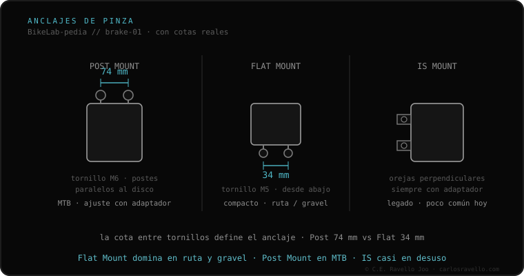

Post Mount é a fixação de pinça de freio dominante na montanha. A pinça se parafusa em dois postes roscados separados 74 mm (74.2 mm exatos) com parafusos M6, paralelos ao rotor, a um torque de 6–8 N·m. Sua grande vantagem: os furos da pinça são ranhurados, então afrouxando um pouco, acionando o manete e reapertando, a pinça se autocentra sobre o rotor. Para rotores maiores usa-se um adaptador de pinça.
Se a sua bike é de montanha, quase com certeza o seu freio é Post Mount. É robusto e dos mais fáceis de alinhar.
A pinça apoia sobre dois postes salientes do quadro ou do garfo e se fixa com dois parafusos M6. Como os furos da pinça são ranhurados (com folga), o alinhamento é simples: afrouxa, aciona o manete para a pinça se centrar sozinha sobre o rotor, e reaperta a 6–8 N·m. A altura nativa dos postes define o rotor que entra sem adaptador (tipicamente 160 ou 180 mm).

Encaixa com qualquer pinça Post Mount do mercado (Shimano, SRAM, Magura) e com o rotor que a altura nativa dos postes permitir; para um maior, um adaptador de pinça. Não aceita pinças Flat Mount diretamente (os adaptadores Flat→Post são muito restritivos).
Se você não sabe qual fixação, rotor ou fluido usa o seu freio, mande o caso. Diagnóstico real, sem te vender nada. Fale conosco no WhatsApp
74 mm de centro a centro (74.2 mm exatos), com parafusos M6. É o que o distingue do Flat Mount, que são 34 mm.
Afrouxe os dois parafusos, acione o manete para a pinça se centrar sozinha sobre o rotor e reaperte a 6–8 N·m. Os furos ranhurados permitem isso.
Com adaptador, mas raramente vale a pena: os adaptadores Flat→Post adicionam muita altura e são restritivos. O normal é Post→Post com adaptador de tamanho.
© 2026 BikeLab Studio. Conteúdo sob CC BY 4.0: você pode copiar, traduzir e publicar, inclusive com fins comerciais. A citação é obrigatória. Sem atribuição, a licença é revogada automaticamente (CC BY 4.0, §6.a) e o uso passa a ser violação de direitos autorais: solicitamos a retirada do conteúdo e sua desindexação. · Design e propriedade: Carlos Ravello Joo